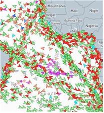

실시간 AIS 항적 및 혼잡도 지도
전 세계 선박 위치 · 항로 밀집도 모니터링 ·
표시 중 128척 (전체)
전체
아시아-태평양
유럽
북미
실시간 갱신 중
선박 항적 · 혼잡 위험 구간
정상 운항
지연 위험
심각 지연

선박 현황 요약
128척
전체 운항
84척
정상 운항
28척
지연 위험
16척
심각 지연
항로별 혼잡 현황
BUSAN → SINGAPORE
72%
SHANGHAI → LOS ANGELES
68%
BUSAN → ROTTERDAM
45%
SINGAPORE → DUBAI
30%
실시간 알림
싱가포르 해협 혼잡도 92%
대기 선박 34척 · 평균 대기 6.2시간
태풍 TY-14 접근 중
영향 선박 8척 · 72시간 내 진입 예상
로테르담 항만 정상 운영
혼잡도 18% · 평균 대기 0.4시간
원인 그래프에서 상세 분석 보기